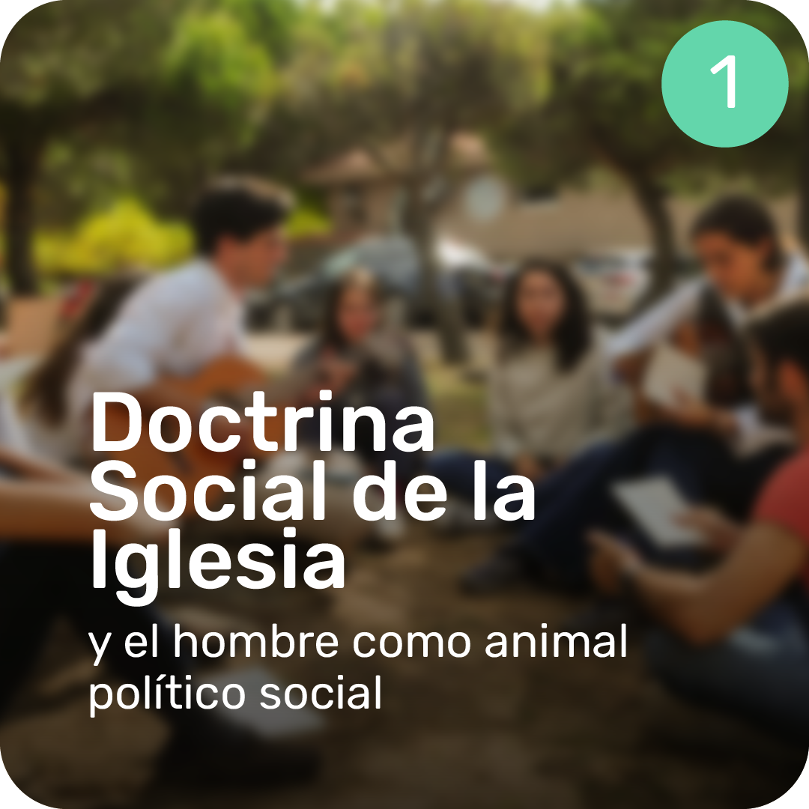
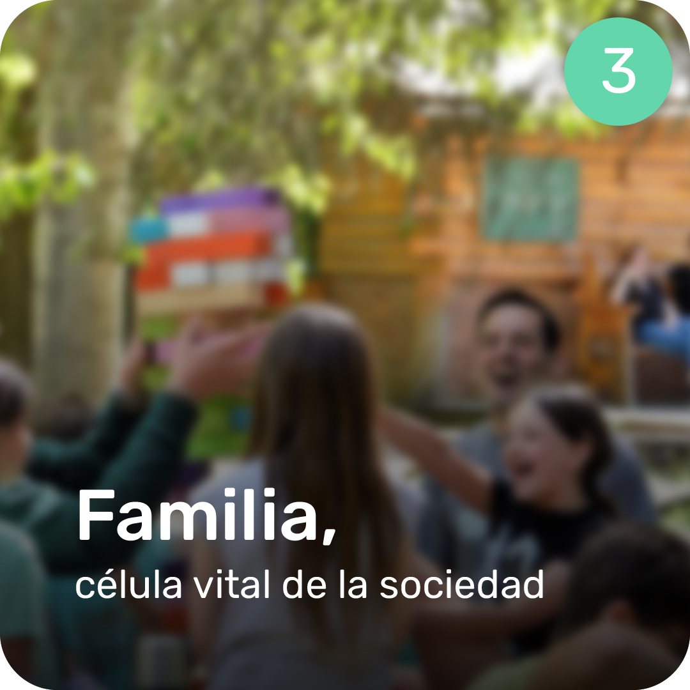
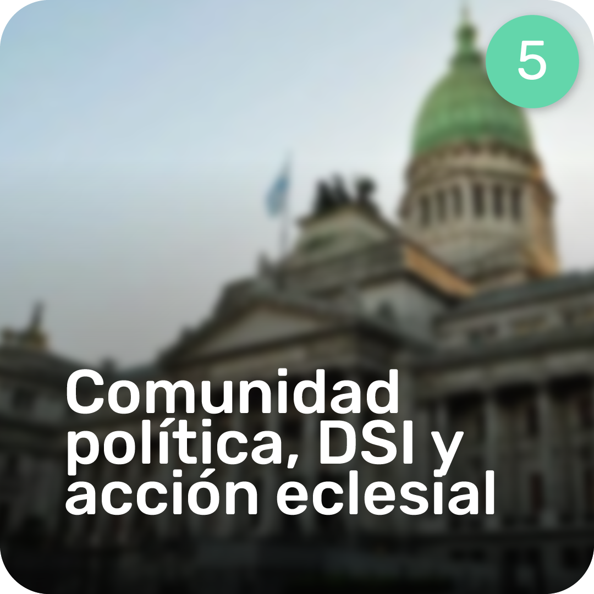
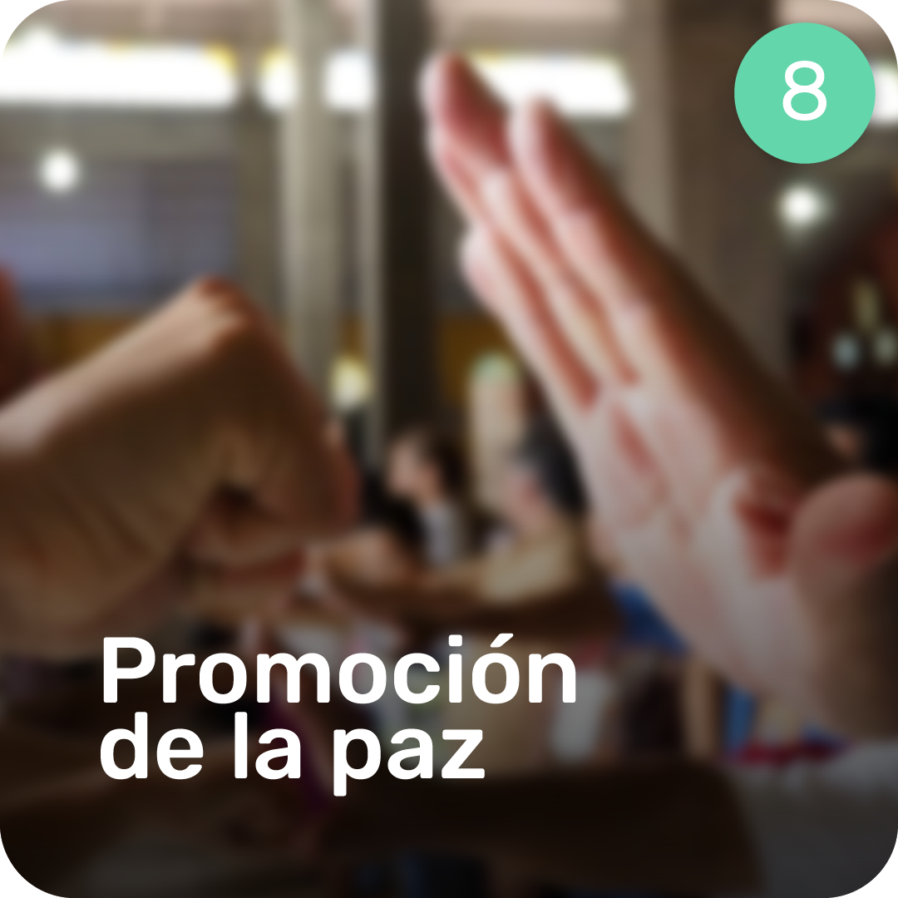

Bien Común 2026
Construyendo los cimientos de una sociedad más justa, humana y solidaria a través de nuestros 8 pilares estratégicos.
Objetivos del plan
Estudiar y reconocer las fuentes, fundamentos y principios de la enseñanza social de la Iglesia.
Analizar los problemas contemporáneos a la luz de los principios de la Doctrina social de la Iglesia.
Ejes Estratégicos

Doctrina Social de la Iglesia
Análisis de la naturaleza social y política del hombre desde la perspectiva de la Doctrina Social de la Iglesia y el pensamiento clásico.
Principios de la DSI
Análisis de los principios fundamentales de la Doctrina Social de la Iglesia, sus valores sociales y su relación con el bien común y las ideologías contemporáneas.

Familia, célula vital
Análisis de la familia como célula vital de la sociedad y el matrimonio como su fundamento. Explora el derecho a la educación, el rol del Estado y la respuesta ante las ideologías actuales.
Trabajo y vida económica
Examen de la dignidad del trabajo, la propiedad privada y la ética en la vida económica bajo la Doctrina Social de la Iglesia y el Magisterio de Francisco.

Comunidad política
Estudio de los fundamentos de la comunidad política, la participación del fiel laico y la relación Iglesia-Estado según la Doctrina Social de la Iglesia.
Comunidad internacional
Análisis de los fundamentos y desafíos de la comunidad internacional desde la Doctrina Social de la Iglesia, abordando la globalización, la soberanía y la Agenda 2030.
Medioambiente
Análisis del cuidado de la casa común y la crisis en la relación entre el hombre y el medio ambiente desde la Doctrina Social de la Iglesia.

Promoción de la paz
Análisis integral de la paz como fruto de la justicia y la caridad, abordando el diálogo, la resolución de conflictos y la superación de vicios sociales.
 Milicianos
Milicianos